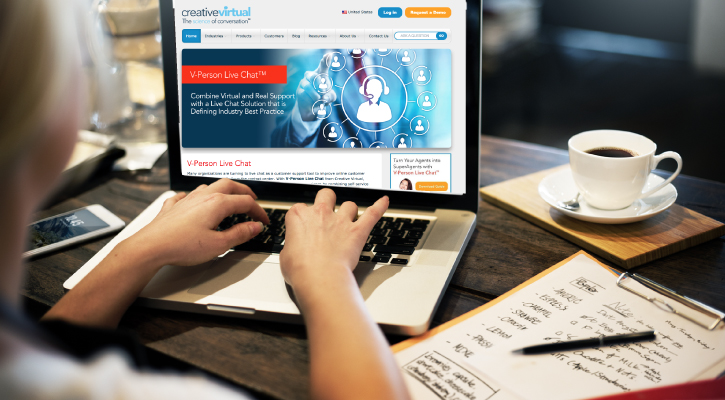

    <section id="intro" class="intro-section" style="padding-top:85px;">
        <div class="jumbotron" style = "padding-top: 10px; padding-bottom: 10px; background-color: transparent">


              <!-- Header with image -->
      

              <header class="w3-display-container w3-wide bgimg w3-grayscale-min" id="home">
                <div class="w3-display-middle w3-text-white w3-center">
               </div>
               <div class="w3-display-middle w3-center">
                 <div style="text-align:center">
                 <span class="w3-text-white w3-hide-large" style="font-size:80px"><font face="Adobe gothic atd b">LIVE CHAT SUPPORT</font></span></div>
             </header>
<div class="container">
<div class="row">
 </div>
  

</div>
</div>
</section>


            <!-- <div class="container">
               <h1 style="margin-top:10px; margin-bottom:0px; font-size: 300%;font-weight: 300;">Contemporary Scottish Landscape Paintings</h1>
            </div>
             </div>
        <div class="container">
            <div class="row">
                    
        </div>
            </div> -->
    </section>


    <section id="about" class="about-section">
        <h2 style="font-weight: 200;"><font face="adobe gothic std b">About the Artist</font></h2>
        <div class="container">
            <div class="row">
                <div class="col-xs-6" style="padding-top:150px;">
                    
                    
                </div>
                <div class="col-xs-6" style="padding-top:85px;">
                 <p class="lead" style="font-weight: 200";><font size="3">LiveChat is a tool that facilitates communication between a company and its customers. Live chat agents who wield that tool use it to make customers happy and satisfied. Through one to one communication, which involves answering various inquiries and solving problems, agents should strive to please their customers.</font></p>
                    <h3><font face="adobe gothic std b">What does a Live Chat Support do ?</font></h3>
                    <p class="lead" style="font-weight: 200;"><font size="3">Chat Support is a form of synchronous messaging (where the customer and the agent must both be present at the same time to engage in a conversation). Often appearing on a company’s website or in its app in the form of a pop-up dialogue box, Chat Support allows for the customer and the agent to communicate via short, written, synchronous messages.</font></p>
                        <p class="lead" style="font-weight: 200;"><font size="3">We consider it practically a minimum requirement for businesses that want to offer the best customer experience. It is often more convenient than voice support and quicker than email. </font></p>
                            <p class="lead" style="font-weight: 200;"><font size="3">we enable Chat Support functionality to operate efficiently by programming AI to respond to common questions. We can manage multiple, concurrent conversations. On average, TaskUs handles over 18 Chats Support messages an hour and more than 7 million in a month!</font></p>
                               
                </div>
                 </div>
             </div>
    </section>
